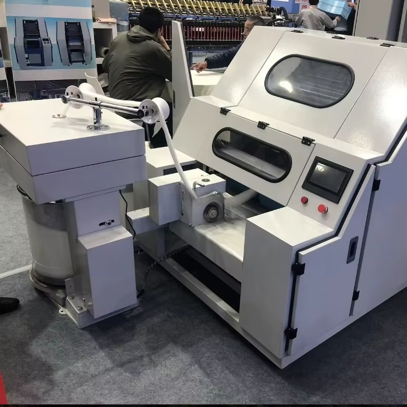

Mini Wool Carding Machine: Uses, Types & What to Check Before Buying

Before wool can become yarn, its fibers need to be prepared. They may need to be opened, separated, and arranged so they can move through the next stages of textile production. A mini wool carding machine is one type of equipment used for this preparation, particularly in small workshops, fiber studios, and small-batch craft settings.
However, carding is only one stage in the process. A carding machine does not usually spin finished yarn by itself. This guide explains what wool carding equipment does, how it differs from combing and spinning machines, and what buyers should verify before choosing a model.
What Is a Wool Carding Machine?
A wool carding machine is designed to open and separate a mass of fibers and distribute them into a more even arrangement. Many machines use rollers or drums covered with fine wire teeth, often called card clothing. As fibers pass through the carding surfaces, clumps are opened and the fibers become easier to handle in later processing.
Depending on the equipment, the prepared fiber may come out as a batt, a web, or another form intended for further preparation. The exact output depends on the machine design and the production method.
How Does Wool Carding Fit Into Yarn Production?
Wool processing varies by the type of fleece, the desired yarn, and the equipment being used. A simplified overview is:
- Fleece selection: Wool is selected according to fiber characteristics and the intended end use.
- Cleaning and preparation: Unwanted dirt and vegetable matter are removed using suitable processes.
- Opening: Compressed or tangled locks are loosened so the fibers can be processed more evenly.
- Carding: Fibers are separated and distributed into a more manageable web or batt.
- Further preparation: Depending on the system, the fiber may be drafted or formed into roving or sliver.
- Spinning: Prepared fibers are twisted to create yarn.
- Finishing and winding: Yarn may be finished, checked, and wound for storage or sale.
Not every small workshop uses the same sequence or machinery. Some hand-spinning workflows use a drum carder and then spin the prepared fiber directly, while larger textile operations may use several specialized machines.
Carding vs. Combing: What Is the Difference?
Carding and combing both prepare fibers, but they create different fiber arrangements and are used for different yarn-making systems.
| Feature | Carding | Combing |
|---|---|---|
| Main purpose | Opens and separates fibers and distributes them into a web or batt. | Further aligns suitable fibers and removes shorter fibers and remaining impurities, depending on the system. |
| Fiber arrangement | Fibers are more open and may be arranged in multiple directions. | Fibers are aligned more nearly parallel. |
| Typical output | Carded web, batt, or sliver, depending on equipment. | Combed sliver or top. |
| Typical role | Common in wool preparation and woollen-style systems. | Used when a more aligned fiber preparation is required. |
These processes are not interchangeable in every workflow. Before buying a machine described as a “carding and combing” machine, ask the seller exactly which process it performs and what form of fiber it produces.
Types of Wool and Yarn-Preparation Equipment
1. Mini Wool Carding Machine
A mini wool carding machine is intended for smaller-scale fiber preparation. It may be considered by fiber artists, small studios, sample makers, and people processing limited batches. Compact dimensions do not automatically tell you its output or capacity, so check the manufacturer's specifications.
2. Drum Carder
A drum carder uses one or more rotating drums covered with card clothing. It is widely used in hand-spinning and small-batch fiber preparation. Drum carders can differ in drum size, tooth specifications, drive method, and the kinds of fiber they are designed to handle.
3. Hand Carders
Hand carders are manual tools with toothed surfaces. They are useful for preparing small amounts of fiber and do not require a motor or a large machine footprint.
4. Industrial Carding Machine
Industrial carding machines are designed for larger production environments and may form part of a complete textile-processing line. Buyers need to consider floor space, power, installation, output requirements, maintenance, operator training, and service support.
5. Wool Combing Equipment
Combing equipment is used for further fiber alignment in workflows that require a more parallel preparation. It is a separate process from ordinary carding, and the machine should be selected according to the desired fiber and yarn system.
6. Yarn Spinning and Winding Machines
Spinning equipment twists prepared fibers into yarn. Winding equipment then transfers yarn onto packages such as cones or bobbins. Neither machine performs the same function as a carder.
Who Might Use a Mini Wool Carding Machine?
- Fiber artists: People preparing wool or blends for hand-spinning and creative fiber work.
- Small craft studios: Workshops that need to prepare modest quantities of fiber.
- Sample makers: Makers testing fiber blends, colors, or preparation methods.
- Education and demonstrations: Suitable learning environments where equipment can be operated with appropriate training and safeguards.
- Small textile businesses: Businesses researching whether a compact machine matches their material and production needs.
A mini machine may not meet the needs of a high-volume factory. Production requirements should be compared with verified machine capacity rather than inferred from product photographs or marketing titles.
What to Check Before Buying a Mini Wool Carding Machine
1. Exact machine function
Confirm whether the listing is for a carder, a comber, a combined unit, or another textile machine. Ask the seller to explain the process and show the input and output material.
2. Fiber compatibility
Ask which fibers and fiber lengths the machine is designed to handle. Do not assume that a machine suitable for one type of wool will work equally well with every natural or synthetic fiber.
3. Working width and roller details
Check the working width, roller or drum dimensions, card-clothing details, and whether replacement parts are available. These specifications help you compare machines more meaningfully than appearance alone.
4. Capacity and output
Request the manufacturer's rated capacity and ask how it was measured. Confirm whether the stated figure refers to raw fiber input, prepared fiber output, or another measure. Treat unsupported seller claims cautiously.
5. Power and electrical requirements
For powered equipment, verify voltage, frequency, motor information, plug type, and any installation requirements. Confirm compatibility with the intended electrical supply before ordering.
6. Dimensions, weight, and workspace
Check the machine's actual dimensions and shipping weight. Make sure the intended workspace can accommodate it and that the work surface is appropriate for the equipment.
7. Maintenance, parts, and support
Ask about cleaning, routine maintenance, replacement card clothing, spare parts, warranty coverage, and technical support. For machinery, after-sales support can matter as much as the initial purchase.
8. Shipping and total landed cost
Review shipping charges, delivery estimates, packaging, import duties or taxes that may apply, and the seller's return policy. Compare the total delivered cost rather than relying only on the displayed product price.
Questions to Ask the Seller Before Ordering
- What is the exact model number and what process does it perform?
- Which wool types, fiber lengths, and other materials are supported?
- What is the verified working width and rated processing capacity?
- What are the motor, voltage, and power requirements, if applicable?
- What accessories, tools, and spare parts are included in the selected package?
- Are replacement rollers or card clothing available?
- Is there a user manual, maintenance guide, and warranty?
- What are the shipping dimensions, weight, delivery terms, and return conditions?
Featured Listing: Mini Wool Yarn Carding Machine
This listing is worth examining if you are researching compact wool-processing equipment. Its product title mentions both combing and carding, so confirm the exact machine function, configuration, and output with the seller before making a purchase. The listing itself should be treated as the source for current model details, selected options, shipping terms, and availability.
Explore the Mini Wool Yarn Carding Machine
Review the live listing carefully. Confirm the exact model, supported fibers, capacity, power requirements, package contents, shipping costs, and seller support before ordering.
BUY NOWAffiliate disclosure: The Yarn Nest may earn a commission from qualifying purchases made through this link, at no extra cost to you.
Frequently Asked Questions
Does a wool carding machine make finished yarn?
No. A carding machine prepares and opens fibers. A separate spinning process is generally needed to twist those fibers into yarn.
What is the purpose of carding wool?
Carding helps open and separate wool fibers and distribute them into a more manageable form for later processing.
Is a mini wool carding machine suitable for a small workshop?
It may be suitable if its working width, capacity, dimensions, power requirements, and fiber compatibility match the workshop's needs. Verify these details with the manufacturer or seller.
Is carding the same as combing?
No. Carding opens and distributes fibers, while combing further aligns suitable fibers and removes shorter fibers in processes designed for that purpose.
Can one carding machine process every type of wool?
Not necessarily. Fiber length, condition, preparation, and machine design all affect compatibility. Check the manufacturer's stated material range.
What should I check before buying a wool carder online?
Check the exact model and function, fiber compatibility, working width, capacity, power, included accessories, spare parts, warranty, seller reviews, shipping, and return terms.
Final Thoughts
A mini wool carding machine can be useful for preparing wool fibers on a smaller scale, but choosing the right equipment starts with understanding the process. Carding, combing, spinning, and winding each have different roles in yarn production.
Compare verified specifications, confirm which fibers the machine can handle, and ask the seller clear questions before ordering. A careful equipment check can help you choose a machine that fits your material, workspace, and production goals.
Explore more practical yarn and crochet guides on The Yarn Nest blog.